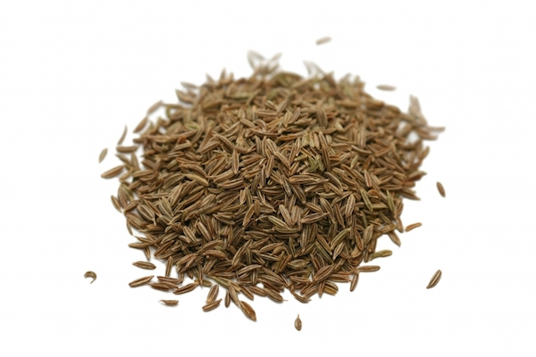
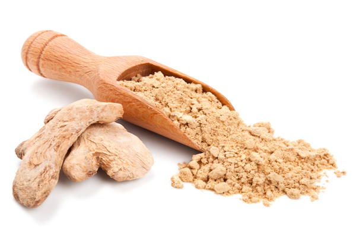
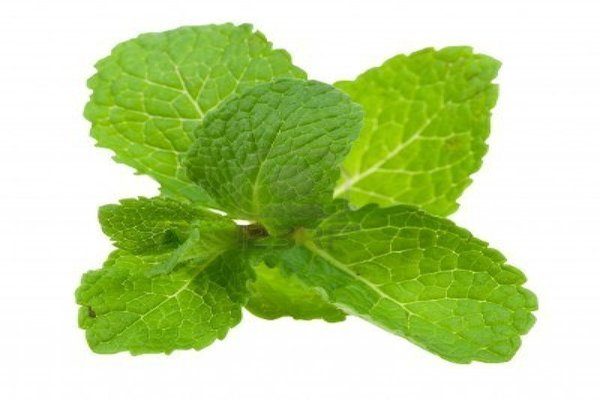

Black Salt
Perfect with seafood and in masalas from the Indian subcontinent!
Garlic Powder
This very fine powdered garlic is great for some recipes, like garlic bread!
Caraway Seeds
An Eastern European staple; potato, cabbage and heavy meat dishes benefit from the Caraway Seed!

Coriander
We use it in curries for an authentic depth of flavor, and also enjoy it in rubs for chicken and fish!
Cumin Seeds
Cumin seeds and adding them to breads, or whip up your favorite curry recipe with our extra fresh supply!
Curry Leaves
The leaves are highly valued as seasoning in southern and west-coast Indian cooking, especially in curries!
Dry Ginger
Ginger can be one of the most enriching flavors in holiday baking!
Mint Leaves
The leaves have a warm, fresh, aromatic, sweet flavor with a cool aftertaste!

Paprika
This is the finest quality paprika available so look forward to extra flavor in everything from chicken paprika to deviled eggs!

Star Anise
Excellent with sweet potatoes or pumpkin its flavor also fuses well with poultry and seafood!